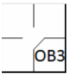

OBSTRUCTION is the act of a fielder who, while not in possession of the ball and not in the act of fielding the ball, impedes the progress of any runner [OBR Definition of Terms].
 |
The abbreviation for the batter-runner is “OB” followed by the number of the fielder who committed the offense, who in turn is charged with an error.
|
If a play is being made on the obstructed runner, or if the batter-runner is obstructed before he touches first base, the ball is dead and all runners shall advance, without liability to be put out, to the bases they would have reached, in the umpire’s judgment, if there had been no obstruction. The obstructed runner shall be awarded at least one base beyond the base he had last legally touched before the obstruction. Any preceding runners, forced to advance by the award of bases as the penalty for obstruction, shall advance without liability to be put out [OBR 6.01(h)(1)].
When a batter awarded first base for obstruction forces one or more runners to advance, their advances are noted with the batting order number of the batter.
When the obstruction is committed the ball is dead and each player, including the batter-runner, may advance to the bases that, in the umpire’s judgment, they would have reached had there been no obstruction.
Obstructions to the batter do not count as a time at bat.